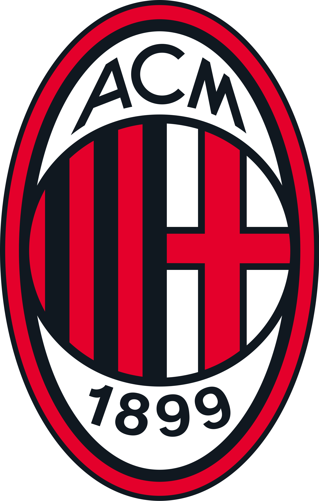
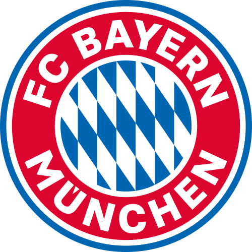
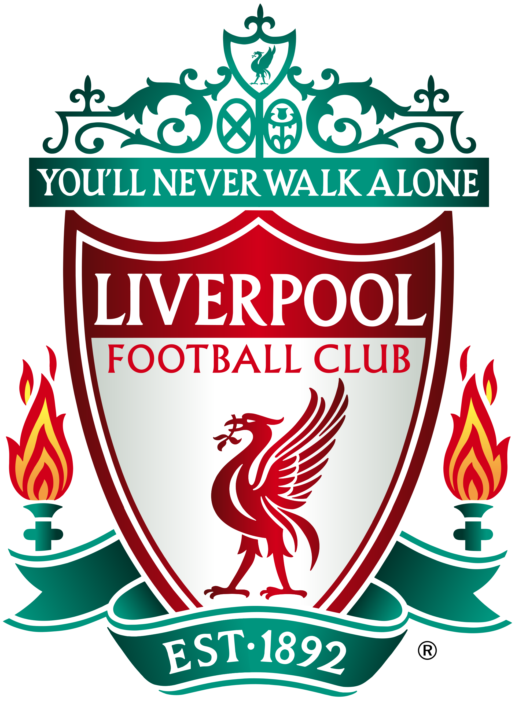
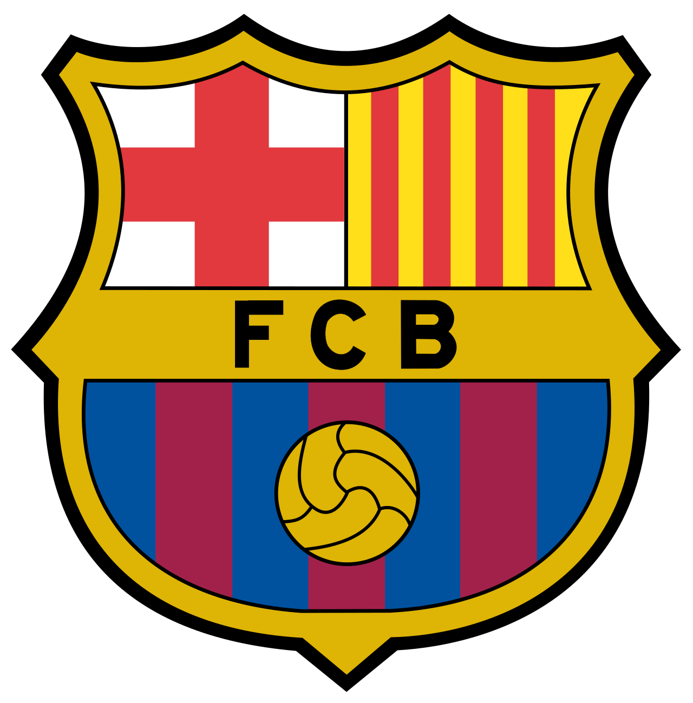
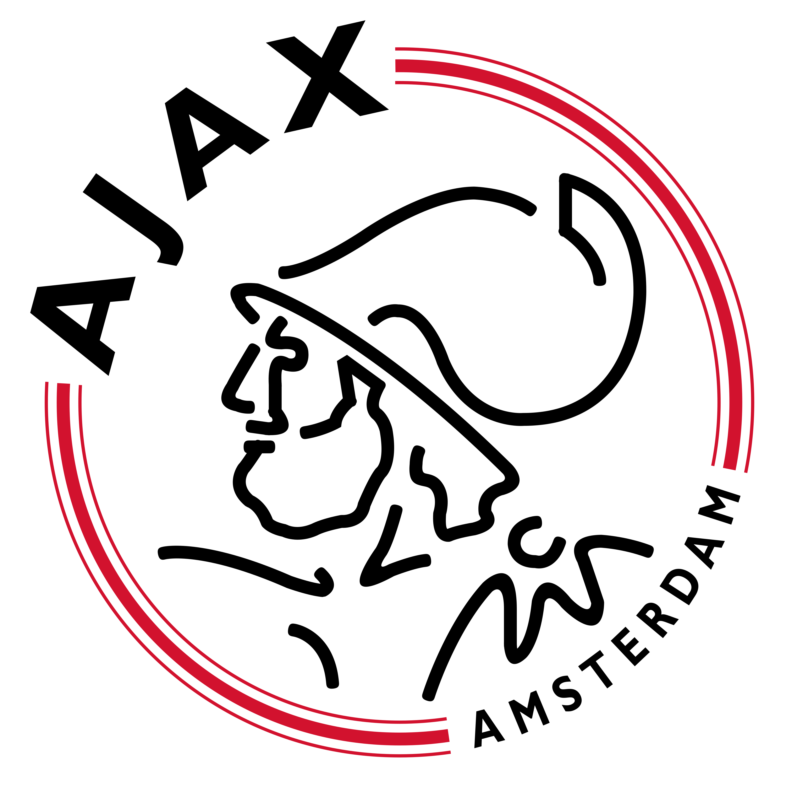
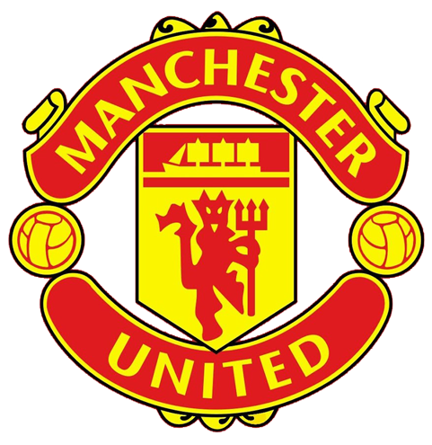
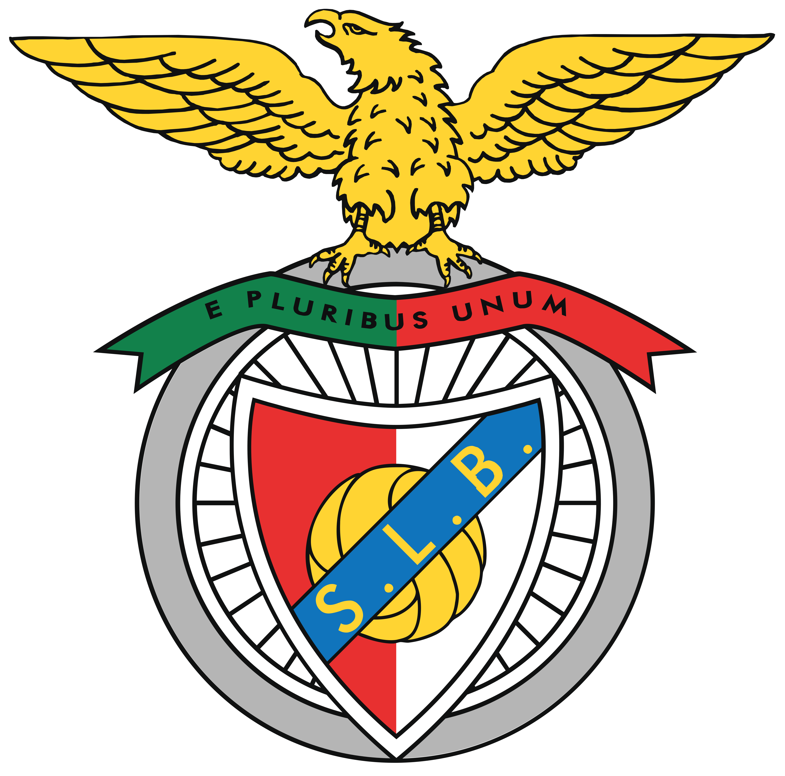

Veja a lista de campeões da Champions League:
| Time | Numero e data dos titulos | Numero de vices |
|---|---|---|
 |
15 (1955–56, 1956–57, 1957–58, 1958–59, 1959–60, 1965–66, 1997–98, 1999–00, 2001–02, 2013–14, 2015–16, 2016–17, 2017–18, 2021–22 e 2023–24) |
3 (1961–62, 1963–64 e 1980–81) |
 |
7 (1962–63, 1968–69, 1988–89, 1989–90, 1993–94, 2002–03 e 2006–07) |
4 (1957–58, 1992–93, 1994–95 e 2004–05) |
 |
6 (1973–74, 1974–75, 1975–76, 2000–01, 2012–13 e 2019–20) |
5 (1981–82, 1986–87, 1998–99, 2009–10 e 2011–12) |
 |
6 (1976–77, 1977–78, 1980–81, 1983–84, 2004–05 e 2018–19) |
4 (1984–85, 2006–07, 2017–18 e 2021–22) |
 |
5 (1991–92, 2005–06, 2008–09, 2010–11 e 2014–15) |
3 (1960–61, 1985–86 e 1993–94) |
 |
4 (1970–71, 1971–72, 1972–73 e 1994–95) |
2 (1968–69 e 1995–96) |
 |
3 (1963–64, 1964–65 e 2009–10) |
4 (1966–67, 1971–72, 2022–23 e 2024–25) |
 |
3 (1967–68, 1998–99 e 2007–08) |
2 (2008–09 e 2010–11) |
 |
2 (1984–85 e 1995–96) |
7 (1972–73, 1982–83, 1996–97, 1997–98, 2002–03, 2014–15 e 2016–17) |
 |
2 (1960–61 e 1961–62) |
5 (1962–63, 1964–65, 1967–68, 1987–88 e 1989–90) |
Para voltar a pagina incial clique aqui